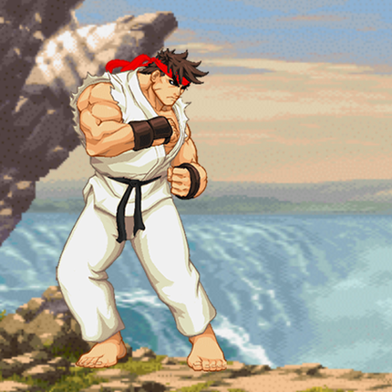

"Hack" the NY Times
In this project, we used Google Chrome's Developer tools to modify the HTML and CSS on our computers.
I made mine after one of my favorite shows: The IT Crowd.
Street Fighter Project
In this project, we needed to animate Ryu based on a user's actions.
I learned Javascript and JQuery event handling throughout the process.

FizzBuzz
In this project, we needed to code the FizzBuzz game.
I learned Javascript functions and scope. I also learned how to use Bootstrap.
Quiz App
In this project, we needed to design and code a quiz application on any topic.
I learned about Javascript objects, Bootstrap, and how to integrate a JQuery plugin.
Hangman
In this project, we needed to use a third-party API and have the results change the DOM.
I learned more about integrating an API.
Karma Startup Landing Page Clone
In this project, we were given the Karma webpage to try to clone.
I learned HTML and CSS throughout the process.
Shopping List
In this project, we needed to design and code original shopping list.
I learned more JQuery, Javascript, and responsive design mobile first design principles.
Hot or Cold
In this project, we were given the hot or cold game design and had to code the game.
I learned how to integrate my code with existing code, JQuery, and Javascript.
StackOverflow Reputation Builder
In this project, we given a StackOverflow project where we needed to implement a new "Get Inspired" feature.
I learned about API integration and improving an existing project.